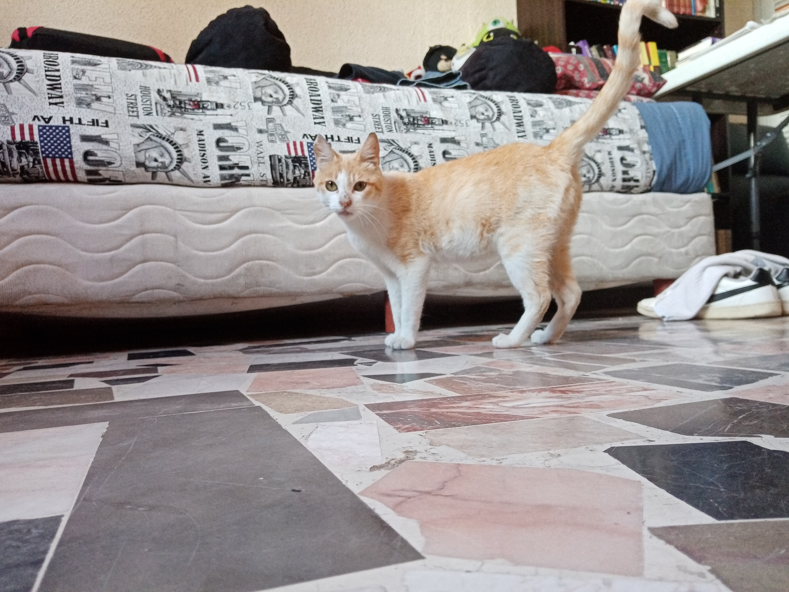

Frodo, Un Perrito MUY Feliz
Me gustan los paseos laaaargos por la ciudad y por el monte y por la calle y por todos lados. Tengo mucha energía y siempre quiero jugar, ¿quieres ser mi amigx? ¡PORQUE YO SÍ!

Ernesto White (Neto para los cuates)
Piensa bien si quieres conocerme, no pierdo el tiempo con mediocres, necesito mi espacio y no sonrío, ni lo haré.


Firulais, hola amigo nuevo!
No soy tan interesante como mi nombre. Me gusta comer y corerr y...otras cosas con "c"ntimiento.

Misifu, Más interesante que mi nombre
Un gato coqueto y tranquilo, cuando quieras manda DM.

Max, no tan cliché como crees
Si pudiera ser otro animal decidiría ser un humano, porque ellos parece que siempre se divierten, siempre estando en el exterior, que envidia
Salmón, eres lo que comes
Mis comidas favoritas son (en orden de preferencia): salmón, salmón ahumado, salmón crudo, salmón con ajo, salmón asado, salmón en su jugo, salmón frío, salmón rosa, salmón robado, una vez comí salmón con salmón.
Abraham, a philosopher
I'm just here to find partners in thought, nothing vapid or physical, simply mental and trascendental, come to me, come to knowledge.
Croissant, Le French
Je m'appelle, man's Benz - Got gyal like ten from Paris, I can't come France - He wan' talk badness on my darg - Man a real cash man, I don't catch man's darg - Flip that, scribble that on the route, man's off - Grip that, fiddle that in the coupe, man's lost - Yo, grab the wheel, man's lost
Lily, más bella que tú
Soy más bella que tú y lo sabes. :*
Pinkman, yo bitch
Well, my name is Skyler White, yo. My husband is Walter White, yo. He told me everything. Seriously? That's right.
Harry, not styles but stylish
I had a few, got drunk on you and now I'm wasted And when I sleep, I'm gonna dream of how you tasted

Balto, too cool for you
If you aren't happy, you failed as a worm. I ain't no worm, I am a fierce wolf, the leader of the pack, better than you.
SOBRE MÍ, Pepita

¡SOY YO, SOY QUIÉN SOY!
Amo las caricias, dormir y alocarme
Acabo de ser adoptada, acabo de dar a luz a tres pequeños y hermosos gatitos (pero no te preocupes, ya se irán de adopción), acabo de ser estirilizada, y comienzo a convertirme en un gato de casa. Creo que lo que deseo encontrar en este sitio es amigos con los que poder pasar el tiempo, a veces me aburro a veces mi humano no pasa el tiempo que quierp conmigo, por eso deseo tener amigos más parecidos a mí. Interesada en: perros y gatos (aunque más gatos).